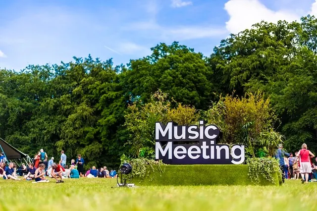
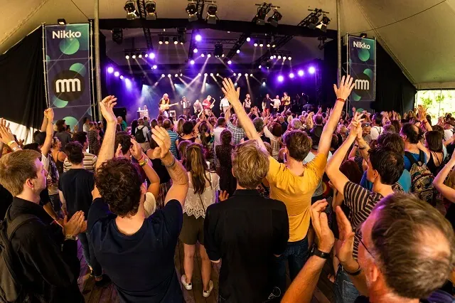
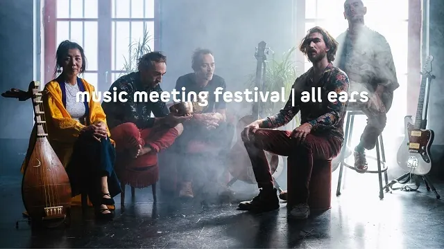

Nieuws ·
‘The light is always changing’ bij Music Meeting Festival 2023

Dit bericht uit ons archief verscheen op 6 maart 2023 op NieuwsNijmegen.nl. Data, tijden en prijzen kunnen inmiddels anders zijn.
In het pinksterweekend op 27, 28 en 29 mei 2023, vindt de 37e editie plaats van Music Meeting Festival in het vertrouwde Nijmeegse Park Brakkenstein. Een ontmoetingsplek voor cultuurminnaars en muziekavonturiers van alle leeftijden. Geconfronteerd met de radicale veranderingen in de wereld, reflecteert het festival – onder het motto ‘The light is always changing’ – hierop met unieke concerten en een verdiepend randprogramma. Internationale artiesten maken hun opwachting zoals ESINAM, EABS meets Jaubi, Liraz, Marja Mortensson & Daniel Herskedal, KUTU en Meridian Brothers. Ook talent uit Nederland krijgt volop ruimte. Neem kemenche-speler Emine Bostanci en drummer Jamie Peet. Dagkaarten zijn vanaf 23 februari te koop via onze website. De toegang is gratis voor kinderen tot 16 jaar.

Muziek en meer
We blijven als Music Meeting onze naam eer aandoen door ontmoetingen te creëren. De Belgisch-Ghanese multi-instrumentaliste ESINAM, die traditionele Afrikaanse (club) muziekscene samenbrengt, deelt op zaterdag het podium met de Zuid-Afrikaanse gitarist Sibusile Xaba. Zondag delen ESINAM en haar band het podium met de Finse saxofonist Linda Fredriksson. Een andere bijzondere ontmoeting is het project waarin urban en traditionele muziek uit Noord-India samenkomen, gepresenteerd door de jonge Poolse spirituele jazzband EABS en het kwartet Jaubi uit Pakistan.
Nieuw op Music Meeting zijn interdisciplinaire projecten. Het festival smeedt sterkere banden met andere kunstvormen zoals spoken word van de Amerikaanse performer Jamika Ajalon, een geluidsinstallatie genaamd L’Objet Sonore gecureerd door bassist Luc Ex. In de All Ears Area is er volop ruimte voor ontmoeting en inspiratie door diverse festivalartiesten en via verschillende kunstvormen, en voor het geven van uiting aan de festivalthematiek.
Wereldreis
Music Meeting maakt dit jaar een wereldreis. We presenteren de jonge generatie uit Scandinavische landen. Allereerst het éénvrouwenorkest van de Finse Maija Kauhanen en de originele Samische zangstijl ‘joik’ door zangeres Marja Mortensson in een samenwerking met tubaist Daniel Herskedal. Ook andere Europese muziek komt aan bod zoals ‘edgy’ Hongaarse folk-rock van Mordái, Poolse jazz door het Anna Marja Jopek Quartet, en de Britse groep Colectiva die de Afro-Latin muziek, jazz en sisterhood verkennen. De Franse muziekscene verrast met KUTU. Zij brengen volvrije impro en Azmari sounds uit Addis-Abeba. Ook niet te missen: PoiL Ueda, een muzikale creatie tussen de Franse rockband PoiL + Benoit Lecomte en de Japanse zangeres en satsuma-biwaspeler Junko Ueda. Van Nederlandse bodem presenteren we de band FaKruTu Dakar Edition in samenwerking met Senegalese musici.
Van verder weg en met weer een andere muziekbeleving is de Ghanese highlife muzikant, songwriter, producer en componist Gyedu-Blay Ambolley & His Sekondi Band. Uit het Midden-Oosten nodigen we de in Israël woonachtige zangeres Liraz, die met haar protestnummers een ode brengt aan haar vaderland Iran. De Colombiaanse Meridian Brothers brengen eclectische elektronische muziek met funk, latin-rock en een vleugje psychedelica.
Jonge makers
Het festival presenteert jaarlijks jonge musici van eigen bodem. Emine Bostanci is een Turkse kemenche-virtuoos. Ze kan worden geassocieerd met hedendaagse muziek, klassiek Turkse muziek en jazz. Zij presenteert drie projecten op Music Meeting waaronder het project ‘Ancient IstanbulTales’. De Turkse, in Nederland woonachtige bassist, componist en dirigent Ardashes Agoshian is via een compositie-opdracht aan dit project verbonden.
Een andere jonge maker die we graag in de spotlight zetten is de Nederlandse drummer Jamie Peet. Deze, in 2020 door Slagwerkkrant verkozen ‘beste jazzdrummer van Nederland’, heeft een voorliefde voor ongewone combinaties en speelt net zo gemakkelijk funk of hip-hop als jazz. Jamie’s motto is “Een bepaalde boosheid is nodig in de muziek”: waarom dat zo is, wordt duidelijk nieuwe programma’s die hij voor Music Meeting maakt.
EERSTE NAMEN MUSIC MEETING FESTIVAL 2023
*Dit programma wordt aangevuld met laatste namen, het programma in de All Ears Area en het kinderprogramma op de zogenaamde Mini Meeting.
Zaterdag 27 mei 2023
16:00 – 00:00 (park open om 15:00)
Fakrutu Dakar Edition / ESINAM + Sibusile Xaba / EABS meets Jaubi / Marja Mortensson & Daniel Herskedal / L’Objet Sonore I
Zondag 28 mei 2023
14:00 – 00:00 (park open om 13:00)
ESINAM – band with guest (Linda Fredriksson) / KUTU / Gyedu-Blay Ambolley & His Sekondi Band /
Meridian Brothers / Emine Bostanci – ‘Ancient Istanbul Tales’ / Jamika & Argonauts / Anna Maria
Jopek Quartet ‘Polish folk’ / Linda Fredriksson JUNIPER / Jamie Peet Trio feat. Reinier Baas and Petter
Eldh / L’Objet Sonore II
Maandag 29 mei 2023
14:00 – 22:00 (park open om 13:00)
Maija Kauhanen / Liraz / Colectiva / Poil Ueda / Jamie Peet with Niels Bros / Emine Bostanci & Dareyn Quartet / Mordái / L’Objet Sonore III
TICKETS EN TOEGIFTKAARTEN
De reguliere kaartverkoop is per direct gestart. De kaarten zijn verkrijgbaar via musicmeeting.nl/nl/festival/tickets.
Dagkaarten kosten 32,-. Een driedagen kaart kost 82,-. Jongeren tussen de 16-26 jaar betalen respectievelijk 19,- en 49,-. Kinderen tot 16 jaar mogen gratis naar binnen. Dit jaar herintroduceren we de TOEGIFTKAART. We willen iedereen kunnen verwelkomen op ons festival, ook eenieder die geen kaartje kan veroorloven of vanwege andere redenen een afstand tot het festival heeft. Daarom vragen we onze bezoekers om te overwegen een kaartje te doneren. Die kaarten komen via het netwerk van onze samenwerkingspartner Stichting Quiet, die zich inzet voor onzichtbare armoede, terecht bij mensen die zo het festival kunnen bijwonen.
Over Music Meeting Festival
Music Meeting Festival gaat dwars door stijlen, genres en culturen. Het festival biedt al ruim 35 jaar een podium aan de beste artiesten wereldwijd: musici die zelden of nooit in Nederland te zien zijn geweest, met nieuwe projecten of in bijzondere samenstellingen. Tijdens het Pinksterweekend staat Park Brakkenstein in Nijmegen traditioneel drie dagen lang in het teken van muzikale ontmoetingen. Music Meeting Festival presenteert niet één genre muziek: van nieuwe co-producties van opvallende jazzmusici, de nieuwste salsa uit Cuba tot Aziatische avant-garde.Music Meeting Festival 2023 wordt mede mogelijk gemaakt door: Fonds Podiumkunsten, Gemeente Nijmegen, Provincie Gelderland, Prins Bernhard Cultuurfonds, VSBfonds en Sena Performers.
